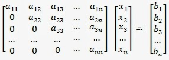
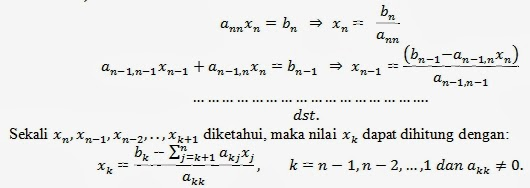
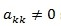
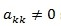
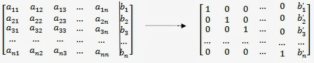

METODE ELIMINASI GAUSS¶
Eliminasi Gauss ialah sebuah cara mengoperasikan nilai-nilai yang berada di dalam matriks sehingga dapat menjadi matriks yang lebih sederhana. Caranya ialah melakukan operasi baris sehingga matriks tersebut menjadi matriks yang eselon-baris. Ini dapat digunakan sebagai salah satu metode penyelesaian persamaan linear dengan menggunakan matriks Caranya dengan mengubah persamaan linear tersebut ke dalam matriks teraugmentasi dan mengoperasikannya. Setelah menjadi matriks Eselon-baris, lakukan substitusi balik untuk mendapatkan nilai dari variabel-variabel tersebut.
Metode ini berangkat dari kenyataan bahwa bila matriks A berbentuk segitiga atas (menggunakan Operasi Baris Elementer) seperti system persamaan berikut ini:

Maka solusinya dapat dihitung dengan teknik penyulingan mundur (backward substitution):

kondisi  sangat penting. Sebab bila persamaan diatas menjerjakan pembagian dengan nol. Apabila kondisi tersebut tidak dipenuhi, maka SPL tidak mempunyai jawaban
sangat penting. Sebab bila persamaan diatas menjerjakan pembagian dengan nol. Apabila kondisi tersebut tidak dipenuhi, maka SPL tidak mempunyai jawaban
ELIMINASI GAUSS JORDAN¶
Dalam aljabar linear, eliminasi Gauss-Jordan adalah versi dari eliminasi Gauss. Pada metode eliminasi Gauss-Jordan kita membuat nol elemen-elemen di bawah maupun di atas diagonal utama suatu matriks. Hasilnya adalah matriks tereduksi yang berupa matriks diagonal satuan (semua elemen pada diagonal utama bernilai 1, elemen-elemen lainnya nol).
Dalam bentuk matriks, eliminasi Gauss-Jordan ditulis sebagai berikut :


import numpy as np
#Definisi Matrix
A = []
B = []
n = int(input("Masukkan ukuran Matrix: "))
for i in range(n):
baris=[]
for i in range(n):
a=int(input("Masukkan Nilai: "))
baris.append(a)
A.append(baris)
for i in range(n):
h = int(input("Masukkan Hasil: "))
B.append(h)
Matrix=np.array(A,float)
Hasil=np.array(B,float)
n=len(Matrix)
#Eliminasi Gauss
for k in range(0,n-1):
for i in range(k+1,n):
if Matrix[i,k]!=0 :
lam=Matrix[i,k]/Matrix[k,k]
Matrix[i,k:n]=Matrix[i,k:n]-(Matrix[k,k:n]*lam)
Hasil[i]=Hasil[i]-(Hasil[k]*lam)
print("Matrix A : ",'\n',Matrix)
#Subtitution
x=np.zeros(n,float)
for m in range(n-1,-1,-1):
x[m]=(Hasil[m]-np.dot(Matrix[m, m+1:n], x[m+1:n]))/Matrix[m,m]
print('Nilai X ',m+1, '=',x[m])
Masukkan ukuran Matrix: 3
Masukkan Nilai: 2
Masukkan Nilai: -2
Masukkan Nilai: 5
Masukkan Nilai: 1
Masukkan Nilai: 5
Masukkan Nilai: 2
Masukkan Nilai: 4
Masukkan Nilai: 5
Masukkan Nilai: 2
Masukkan Hasil: 12
Masukkan Hasil: 3
Masukkan Hasil: -4
Matrix A :
[[ 2. -2. 5. ]
[ 0. 6. -0.5 ]
[ 0. 0. -7.25]]
Nilai X 3 = 3.2413793103448274
Nilai X 2 = -0.2298850574712644
Nilai X 1 = -2.333333333333332
jadi panjang Matrix yang dibuat dalam Program Diatas adalah 3 variabel.
|2 -2 5| |12|
|1 5 2|=| 3 |
|4 5 2| |-4|
pivot yang dibentuk adalah a1.1,a2.2,dan a3.3 sehingga semua angka yang ada dibawah pivot
akan dikonversikan menjadi nol sesuai hasil program dan hasil dari persamaan diatas
menghasilkan x1=-2.333333333, x2=-0.22988505 dan x3=3.2413793
ELIMINASI GAUSS JACOBI¶
Metode Jacobi, adalah metode tak langsung atau metode iteratif yang melakukan perbaharuan nilai x yang diperoleh tiap iterasi (mirip metode substitusi berurutan). Metode ini hampir sama dengan metode Gauss Seidel, namun tidak melibatkan perhitungan implisit.
Metode ini merupakan suatu teknik penyelesaian SPL berukuran n x n, AX = b, secara iteratif. Proses penyelesaian dimulai dengan suatu hampiran awal terhadap penyelesaian, X0, kemudian membentuk suatu serangkaian vector X1, X2, … yang konvergen ke X.
Metode ini ditemukan oleh Matematikawan yang berasal dari Jerman,Carl,Gustav,Jacobi. Penemuan ini diperkirakan pada tahun 1800-an

from pprint import pprint
from numpy import array, zeros, diag, diagflat, dot
import numpy as np
def jacobi(A,b,N=25,x=None):
#Membuat iniial guess
if x is None:
x = zeros(len(A[0]))
#Membuat vektor dari elemen matrix A
D = diag(A)
R = A - diagflat(D)
#Iterasi
for i in range(N):
x = (b - dot(R,x)) / D
return x
Mat1 = []
Mat2 = []
n = int(input("Masukkan ukuran Matrix: "))
for i in range(n):
baris=[]
for i in range(n):
a=int(input("Masukkan Nilai: "))
baris.append(a)
Mat1.append(baris)
for i in range(n):
h = int(input("Masukkan Hasil: "))
Mat2.append(h)
A = array(Mat1,float)
b = array(Mat2,float)
x=len(Mat1)
guess = np.zeros(x,float)
sol = jacobi(A,b,N=25,x=guess)
print("A:")
pprint(A)
print("b:")
pprint(b)
print("x:")
pprint(sol)
Masukkan ukuran Matrix: 3
Masukkan Nilai: 3
Masukkan Nilai: 1
Masukkan Nilai: -1
Masukkan Nilai: 4
Masukkan Nilai: 7
Masukkan Nilai: -3
Masukkan Nilai: 2
Masukkan Nilai: -2
Masukkan Nilai: 5
Masukkan Hasil: 5
Masukkan Hasil: 20
Masukkan Hasil: 10
A:
array([[ 3., 1., -1.],
[ 4., 7., -3.],
[ 2., -2., 5.]])
b:
array([ 5., 20., 10.])
x:
array([1.50602413, 3.13253016, 2.6506024 ])
ELIMINASI GAUSS SEINDEL¶
Metode iterasi Gauss-Seidel adalah metode yang menggunakan proses iterasi hingga diperoleh nilai-nilai yang berubah-ubah dan akhirnya relatif konstan. Metode iterasi Gauss-Seidel dikembangkan dari gagasan metode iterasi pada solusi persamaan tak linier. Gauss ini mempunyai kelebihan dan kekurangan.
kelebihannya yaitu Metode eliminasi gauss-seidel digunakan untuk menyelesaikan SPL yang berukuran kecil karena metode ini lebih efisien. Dengan metode iterasi Gauss-Seidel toleransi pembulatan dapat diperkecil karena iterasi dapat diteruskan sampai seteliti mungkin sesuai dengan batas toleransi yang diinginkan.
kekurangannya yaitu Kelemahan dari metode ini adalah masalah pivot (titik tengah) yang harus benar–benar diperhatikan, karena penyusunan yang salah akan menyebabkan iterasi menjadi divergen dan tidak diperoleh hasil yang benar
(\assets\images\gaus8.png)
def seidel(a, x ,b):
#Mencari Panjang Matrix
n = len(a)
for j in range(0, n):
d = b[j]
#Menghitung xi, yi, zi
for i in range(0, n):
if(j != i):
d-=a[j][i] * x[i]
x[j] = d / a[j][j] #Solusi
return x
m=int(input("Masukkan Panjang Matrix: "))
a=[]
b=[]
for k in range(m):
mat1=[]
for i in range(m):
l=float(input("Masukkan a"+str(k+1)+","+str(i+1)+": "))
mat1.append(l)
h=float(input("Masukkan Hasil: "))
b.append(h)
a.append(mat1)
n = 3
x = [0, 0, 0]
print(x)
for i in range(0, 100):
x = seidel(a, x, b)
print(x)
Masukkan Panjang Matrix: 3
Masukkan a1,1: 4
Masukkan a1,2: -1
Masukkan a1,3: 1
Masukkan Hasil: 7
Masukkan a2,1: 4
Masukkan a2,2: -8
Masukkan a2,3: 1
Masukkan Hasil: -21
Masukkan a3,1: -2
Masukkan a3,2: 1
Masukkan a3,3: 5
Masukkan Hasil: 15
[0, 0, 0]
[1.75, 3.5, 3.0]
[1.875, 3.9375, 2.9625]
[1.99375, 3.9921875, 2.9990625]
[1.99828125, 3.9990234375, 2.9995078125]
[1.99987890625, 3.9998779296875, 2.9999759765625003]
[1.99997548828125, 3.9999847412109375, 2.999993247070312]
[1.9999978735351562, 3.9999980926513667, 2.999999530883789]
[1.9999996404418945, 3.9999997615814205, 2.9999999038604734]
[1.9999999644302369, 3.9999999701976776, 2.9999999917325595]
[1.9999999946162794, 3.9999999962747097, 2.99999999859157]
[1.9999999994207849, 3.9999999995343387, 2.9999999998614464]
[1.9999999999182232, 3.999999999941793, 2.999999999978931]
[1.9999999999907154, 3.999999999992724, 2.9999999999977414]
[1.9999999999987457, 3.9999999999990905, 2.9999999999996803]
[1.9999999999998526, 3.9999999999998863, 2.9999999999999636]
[1.9999999999999807, 3.999999999999986, 2.999999999999995]
[1.9999999999999978, 3.9999999999999987, 2.9999999999999996]
[1.9999999999999996, 4.0, 3.0]
[2.0, 4.0, 3.0]
[2.0, 4.0, 3.0]
[2.0, 4.0, 3.0]
[2.0, 4.0, 3.0]
[2.0, 4.0, 3.0]
[2.0, 4.0, 3.0]
[2.0, 4.0, 3.0]
[2.0, 4.0, 3.0]
[2.0, 4.0, 3.0]
[2.0, 4.0, 3.0]
[2.0, 4.0, 3.0]
[2.0, 4.0, 3.0]
[2.0, 4.0, 3.0]
[2.0, 4.0, 3.0]
[2.0, 4.0, 3.0]
[2.0, 4.0, 3.0]
[2.0, 4.0, 3.0]
[2.0, 4.0, 3.0]
[2.0, 4.0, 3.0]
[2.0, 4.0, 3.0]
[2.0, 4.0, 3.0]
[2.0, 4.0, 3.0]
[2.0, 4.0, 3.0]
[2.0, 4.0, 3.0]
[2.0, 4.0, 3.0]
[2.0, 4.0, 3.0]
[2.0, 4.0, 3.0]
[2.0, 4.0, 3.0]
[2.0, 4.0, 3.0]
[2.0, 4.0, 3.0]
[2.0, 4.0, 3.0]
[2.0, 4.0, 3.0]
[2.0, 4.0, 3.0]
[2.0, 4.0, 3.0]
[2.0, 4.0, 3.0]
[2.0, 4.0, 3.0]
[2.0, 4.0, 3.0]
[2.0, 4.0, 3.0]
[2.0, 4.0, 3.0]
[2.0, 4.0, 3.0]
[2.0, 4.0, 3.0]
[2.0, 4.0, 3.0]
[2.0, 4.0, 3.0]
[2.0, 4.0, 3.0]
[2.0, 4.0, 3.0]
[2.0, 4.0, 3.0]
[2.0, 4.0, 3.0]
[2.0, 4.0, 3.0]
[2.0, 4.0, 3.0]
[2.0, 4.0, 3.0]
[2.0, 4.0, 3.0]
[2.0, 4.0, 3.0]
[2.0, 4.0, 3.0]
[2.0, 4.0, 3.0]
[2.0, 4.0, 3.0]
[2.0, 4.0, 3.0]
[2.0, 4.0, 3.0]
[2.0, 4.0, 3.0]
[2.0, 4.0, 3.0]
[2.0, 4.0, 3.0]
[2.0, 4.0, 3.0]
[2.0, 4.0, 3.0]
[2.0, 4.0, 3.0]
[2.0, 4.0, 3.0]
[2.0, 4.0, 3.0]
[2.0, 4.0, 3.0]
[2.0, 4.0, 3.0]
[2.0, 4.0, 3.0]
[2.0, 4.0, 3.0]
[2.0, 4.0, 3.0]
[2.0, 4.0, 3.0]
[2.0, 4.0, 3.0]
[2.0, 4.0, 3.0]
[2.0, 4.0, 3.0]
[2.0, 4.0, 3.0]
[2.0, 4.0, 3.0]
[2.0, 4.0, 3.0]
[2.0, 4.0, 3.0]
[2.0, 4.0, 3.0]
[2.0, 4.0, 3.0]
[2.0, 4.0, 3.0]
[2.0, 4.0, 3.0]